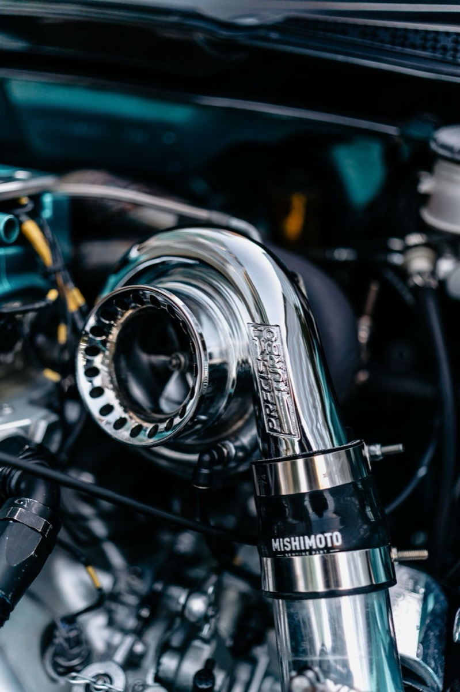
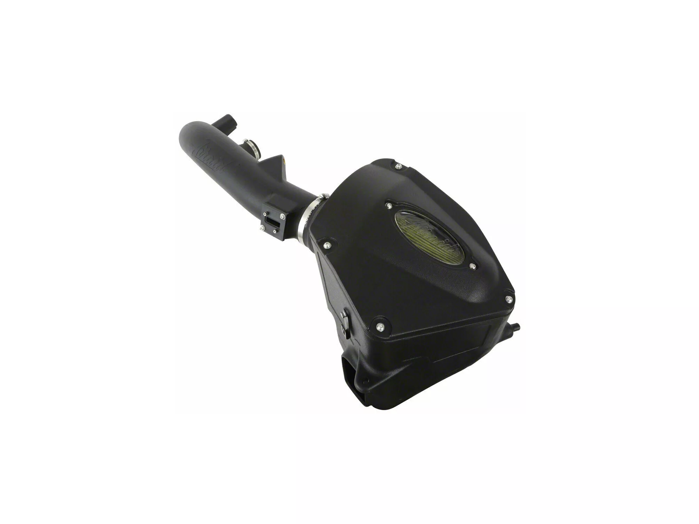

Cold Air Intake on a Turbo Four: Noise, Power, or Neither?
A cold air intake is the second thing most people buy after a leveling kit, and it's the modification with the widest gap between what marketing claims and what owners actually feel. Take a modern 2.7L turbocharged four as the example: figures in the 310 hp and 430 lb-ft region are typical for the c
A cold air intake is the second thing most people buy after a leveling kit, and it’s the modification with the widest gap between what marketing claims and what owners actually feel.
Take a modern 2.7L turbocharged four as the example: figures in the 310 hp and 430 lb-ft region are typical for the class, and they are worth paying attention to. It is a genuinely interesting engine to bolt an intake onto — more torque than the naturally aspirated V6 it replaced in most lineups, and more low-end twist than you would expect from a four. That turbocharger is also the reason an intake behaves differently here than it does on a naturally aspirated V8.
What an intake can and cannot do
Let’s separate the mechanisms, because “adds 15 hp” collapses three different things into one number.
Where an intake can help: A stock airbox is designed for noise reduction first, flow second: the intake resonator silencers and the box’s sound baffling add restriction. On a turbocharged engine, reducing pre-turbo restriction can let the turbo spool marginally faster, which you feel as slightly quicker tip-in rather than peak power. There’s a real if modest improvement available here, more so on a turbo engine than an NA one.
Where it can’t: The mass airflow sensor, throttle body, and ECU calibration remain the bottlenecks. A bolt-on intake cannot change the ECU’s boost targets. The engine management will trim around whatever extra air arrives and hold its commanded power. If you don’t change the tune, you mostly change the sound.
What you actually get: Induction noise on throttle. On a turbo four, that’s a noticeable whoosh-and-flutter charater that’s more dramatic than the power gain. Plenty of owners buy an intake purely for that and are happy, which is a legitimate reason. Just don’t tell yourself it’s a performance build.

Two Failure Modes Worth Knowing
1. Oiled filter media and the MAF. Many aftermarket intakes use oiled cotton-gauze filters. Over-oiling is the classic failure mode: oil migrates downstream, coats the mass airflow sensor’s hot wire, and produces rough idle, lean codes, and eventually a P0171. If you go oiled, use less oil than the instructions suggest and clean the MAF with proper MAF cleaner — never brake clean — when you service the filter.
2. Heat soak and true “cold air.” Half of what’s sold as a cold air intake pulls from inside the engine bay. On a truck that idles in traffic or works in summer heat, intake air temperature climbs and the ECU pulls timing. A sealed box that draws from the factory fender location is often better than an open cone with a heat shield. Look at where the filter actually draws from, not at the brand name.

Realistic expectations on a turbo four
Our position: no dyno figures are published here, because no instrumented before/after test was run. What follows is what the mechanism supports and what owners consistently report across public forums.
- Expect a noticeable change in sound, especially under load and during spool.
- Expect little to no seat-of-the-pants power change without a tune. If someone tells you they felt 20 hp, ask if they also installed a tune at the same time. They usually did.
- Expect a possible small efficiency gain if the factory box was genuinely restrictive, and roughly nothing if it wasn’t. Modern OEM intakes on turbo engines are better than the aftermarket wants you to believe.

Where the money is better spent first
If your goal is actual performance on this engine, the intake is near the bottom of the list. In rough order of return per dollar on a turbo four:
- A tune. This is the only thing that changes boost targets and shift logic. It’s also the modification most likely to affect your warranty. Understand that before you do it.
- Tires. On a 4x4 truck that’s mostly your contact patch, and the factory all-seasons are a compromise.
- Weight reduction. Free, and a light bed makes a measurable difference on a 5,000 lb truck.
- Intake and exhaust. Sound and character, plus a small real gain once tuned.
The short version
Buy an intake on a turbo four for the induction noise, and know that’s what you’re buying. It’s a fine purchase for that reason.
Don’t buy it expecting a power gain you’ll feel, and don’t buy an open-cone design that breathes hot engine-bay air in July traffic. Sealed box, factory fender draw, lightly-oiled filter, MAF cleaned at every service. That’s the version of this modification that doesn’t cost you a sensor and a Saturday re-diagnosing a lean code.
The intakes that actually fit, and what they cost
Five listings for a 2019–2026 2.7L turbo four. Prices and review counts as the listings showed them on 4 November 2026. Every one of them fits the application it is listed for; they differ in filter material and whether the box is sealed, which is what this article has been about.

aFe Momentum GT, Pro DRY S (19–26 2.7L Silverado 1500)
This is the pick because it does the two things the rest of this article says matter, and it does them together: a sealed housing rather than an open cone, and a dry filter rather than an oiled one. That combination removes the over-oiling failure mode entirely — there is no oil to migrate onto the MAF wire, so the P0171 you were warned about above simply isn't available to you.
The Pro 5R oiled version of the same intake is $15 cheaper. Take the dry one anyway. Fifteen dollars is not worth reintroducing the one failure this article spends a section on.
Keep the 436 in proportion: those ratings are pooled across every truck this housing is listed for, so they are evidence about the housing and the filter rather than about this engine specifically. Read that way they are consistent and blunt. Owners repeatedly report no measurable gain: "I haven't noticed anything, still sounds the same and still feels the same. No gas mileage increase or anything, kind of a let down for an intake that cost $400 plus." If you are buying this for a number on a dyno sheet, the reviews are telling you not to. If you are buying it for a sealed dry element and a cleaner engine bay, they are not arguing with you.
- Price
- $435.00
- Fitment
- 2019–2026, 2.7L TurboMax
- Filter
- Pro DRY S — dry, no oiling
- Housing
- Sealed box
- Owner reviews
- 436
See the aFe Momentum GT → list price checked 4 Nov 2026

AIRAID Performance, SynthaMax Dry Filter (19–26 2.7L Silverado 1500)
Cheapest of the group, and it is also a dry filter, which puts it ahead of several pricier options on the point that actually causes trouble. AIRAID's SynthaMax media is a synthetic dry element — same no-oiling argument as the aFe, $67 less.
The catch is the review base: 36 against the aFe's 436. You are buying with less evidence behind the fitment than the aFe has. On a part that is a Saturday-morning bolt-on rather than a safety item, that is a reasonable trade to make. Just make it knowingly.
And read the 36 rather than the average, because they are more specific than the count suggests. The complaints cluster around moulding, not design: one owner describes two units in a row arriving with pinholes in the intake pipe and a gap around the MAF boss, the second better but still leaking at the seams. Two others report a check engine light straight after fitting — "it made my check engine light come on" — though one of those attributes it to the 2.7L rather than the intake. A three-star rates the torque noticeable and the airbox finish poor, and notes the 2.7L wants a MAF extension pigtail that is not in the box. Inspect the pipe before you start, and check whether your truck needs that pigtail.
- Price
- $368.00
- Fitment
- 2019–2026, 2.7L TurboMax
- Filter
- SynthaMax — dry, no oiling
- Owner reviews
- 36
See the AIRAID intake → list price checked 4 Nov 2026

S&B Cold Air Intake, Dry Extendable Filter (19–26 2.7L Silverado 1500)
S&B has the largest review base of anything that fits this engine, and the filter is dry, so it clears both hurdles. It sits between the other two on price and is the option with the most other owners able to tell you whether it bolted up cleanly.
If you want to stop researching and buy, this is the defensible choice: dry media, mid price, deepest evidence. It is not obviously better than the aFe. It is harder to argue with.
One thing the number does not tell you: those 2,796 ratings are pooled across every vehicle S&B lists this filter for — Duramax, Powerstroke, EcoBoost, RAM — not just the 2.7L. Read that way the sample is still the best evidence here, and the low reviews are specific rather than vague. The recurring failure is the airbox not lining up: "Holes do not line up to bolt air box down", and one owner sent three units back without getting one that fitted. That is a moulding and quality-control pattern rather than a design flaw, and it is a small minority of a very large sample — but it is the thing to check first when the box arrives.
- Price
- $399.00
- Fitment
- 2019–2026, 2.7L TurboMax
- Filter
- Dry extendable — no oiling
- Owner reviews
- 2,796
See the S&B intake → list price checked 4 Nov 2026
Not one of the five 2.7L listings we checked states a CARB executive order number. Absence of a claim is not proof the part is illegal — but if you register in California or a state that follows its rules, confirm exemption with the manufacturer before you order, because the listing will not tell you.
We also found no published dyno sheet for any of them, so no horsepower number appears on this page. The star figures quoted above come from each listing's own rating summary; where a listing's count is pooled across other vehicles, the card says so.
Topics
- Engine & Intake
- aFe
- AIRAID
- S&B
- Silverado 1500
- Duramax
- TurboMax
- 2.7L